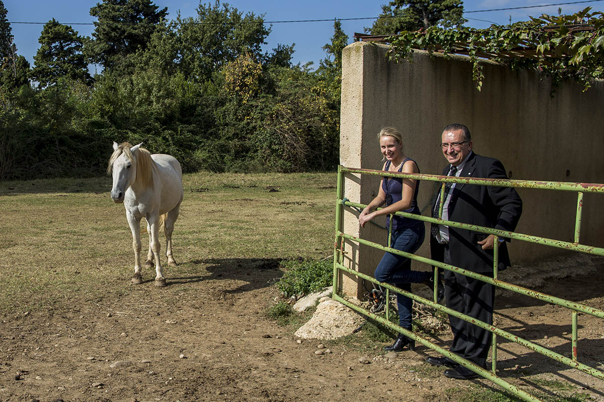
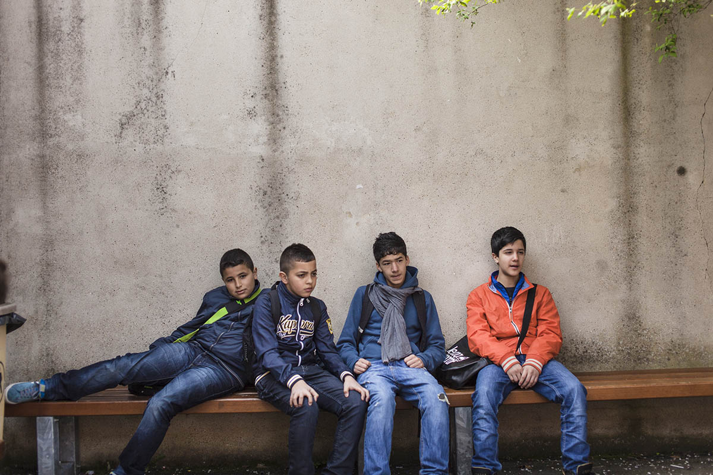

{% set page = { title: "LesJours" } %}
{% extends "partials/layout.html" %}

{% block content %}
<div class="container">
<style>
	html { height: 100%; }
	body { height: inherit; overflow: hidden; }
	body > div.container { height: calc(100% - 85px); }
	body > div.container > .col { height: 100%; }

	.carousel-container,
	.carousel,
	.carousel li,
	.carousel img { height: inherit; }

	.carousel-controls {
		background: #FFF;
		position: fixed;
		bottom: 0;
		left: 0;
		right: 0;
	}
</style>
	<div class="col">
		<div class="carousel-container">
			<ul class="carousel">
				<li class="wall obsession-1">
					
					<div class="overlay overlay-color"></div>
					<div class="overlay overlay-pattern"></div>
					<div class="overlay">
						<div class="title gutter-top-7 gutter-sm-top-4 gutter-sm-4 col-md-h-1 col-lg-h-1">
							{% include "img/snake.svg" %}
							<h2 class="h2"><a class="link-unstyled" href="#">La mauvaise herbe de Provence</a></h2>
							<span class="p-larger">Magna aliqua Ut enim</span>
							<a href="#" class="btn btn-transparent"><i>{{ icon("chevron-down", "Lire") }}</i></a>
						</div>
						<div class="intro gutter-sm-4 col-md-left-1 col-md-5 col-lg-left-1 col-lg-6">
							<p>Itas simin ent. Udicius et ut aut quasperum, aditae serum isqui doles molorit quiandam sumquoditias etur reperi beatur aut aliti torero blant as que odi odit quos autem evelianiate nonem sam aut omnihillit etum lam explitatur ?</p>
							<p>Faceptiorro magnihiciist as alitas velestrunt, sed magnihit doluptatem inullam, sitem. Et et, quas utemquam si incipsam, venimpor aut vel eos ut quo inction num rerescius.</p>
						</div>
						<div class="more text-center">
							<a href="#" class="btn btn-reverse"><i>{{ icon("chevron-down", "Lire") }}</i></a>
						</div>
					</div>
				</li>
				<li class="wall obsession-2">
					
					<div class="overlay overlay-color"></div>
					<div class="overlay overlay-pattern"></div>
					<div class="overlay">
						<div class="title gutter-top-7 gutter-sm-top-4 gutter-sm-4 col-md-h-1 col-lg-h-1">
							{% include "img/snake.svg" %}
							<h2 class="h2"><a class="link-unstyled" href="#">Good Com’<br/>bad COP</a></h2>
							<span class="p-larger">Magna aliqua Ut enim</span>
							<a href="#" class="btn btn-transparent"><i>{{ icon("chevron-down", "Lire") }}</i></a>
						</div>
						<div class="intro gutter-sm-4 col-md-left-1 col-md-5 col-lg-left-1 col-lg-6">
							<p>Itas simin ent. Udicius et ut aut quasperum, aditae serum isqui doles molorit quiandam sumquoditias etur reperi beatur aut aliti torero blant as que odi odit quos autem evelianiate nonem sam aut omnihillit etum lam explitatur ?</p>
							<p>Faceptiorro magnihiciist as alitas velestrunt, sed magnihit doluptatem inullam, sitem. Et et, quas utemquam si incipsam, venimpor aut vel eos ut quo inction num rerescius.</p>
						</div>
						<div class="more text-center">
							<a href="#" class="btn btn-reverse"><i>{{ icon("chevron-down", "Lire") }}</i></a>
						</div>
					</div>
				</li>
				<li class="wall obsession-3">
					
					<div class="overlay overlay-color"></div>
					<div class="overlay overlay-pattern"></div>
					<div class="overlay">
						<div class="title gutter-top-7 gutter-sm-top-4 gutter-sm-4 col-md-h-1 col-lg-h-1">
							{% include "img/snake.svg" %}
							<h2 class="h2"><a class="link-unstyled" href="#">Les années<br/>Collège</a></h2>
							<span class="p-larger">Un an en 3<sup>ème</sup>B à Aubervilliers</span>
							<a href="#" class="btn btn-transparent"><i>{{ icon("chevron-down", "Lire") }}</i></a>
						</div>
						<div class="intro gutter-sm-4 col-md-left-1 col-md-5 col-lg-left-1 col-lg-6">
							<p>Itas simin ent. Udicius et ut aut quasperum, aditae serum isqui doles molorit quiandam sumquoditias etur reperi beatur aut aliti torero blant as que odi odit quos autem evelianiate nonem sam aut omnihillit etum lam explitatur ?</p>
							<p>Faceptiorro magnihiciist as alitas velestrunt, sed magnihit doluptatem inullam, sitem. Et et, quas utemquam si incipsam, venimpor aut vel eos ut quo inction num rerescius.</p>
						</div>
						<div class="more text-center">
							<a href="#" class="btn btn-reverse"><i>{{ icon("chevron-down", "Lire") }}</i></a>
						</div>
					</div>
				</li>
			</ul>
			<div class="carousel-controls">
				<button class="toggle" data-direction="backward">Prev</button>
				<button class="toggle">Next</button>
			</div>
		</div>
	</div>
</div>
{% endblock %}